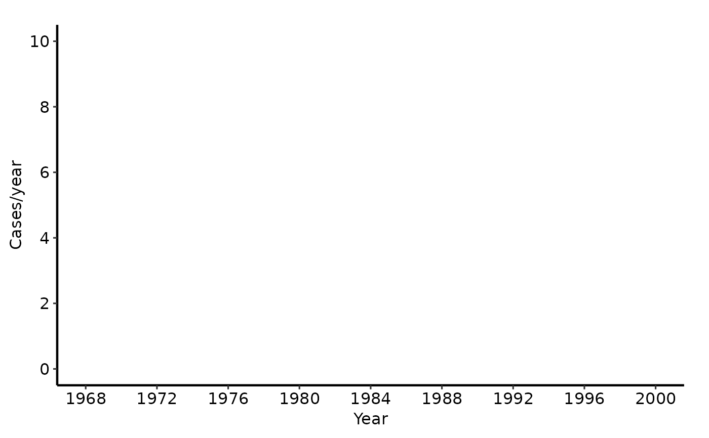
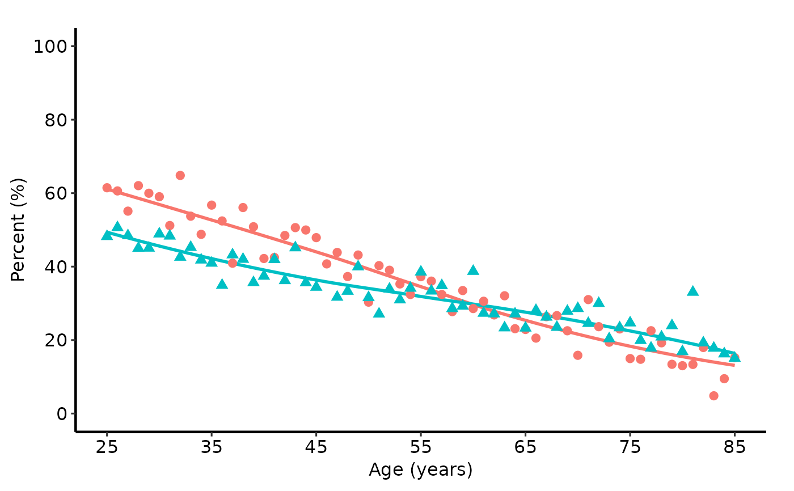
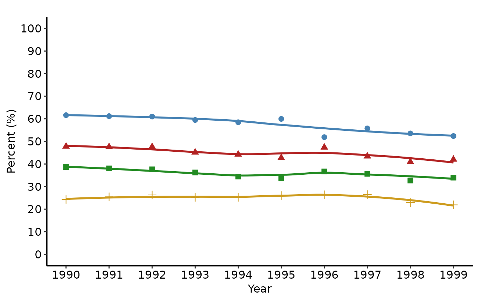

Draws a LOESS smooth overlaid with per-x-value summary-statistic points (mean or median computed at construction time).
Usage
# S3 method for class 'hvti_trends'
plot(
x,
smoother = "loess",
span = 0.75,
se = FALSE,
point_size = 2.5,
point_shape = 19L,
alpha = 0.2,
...
)Arguments
- x
An
hvti_trendsobject.- smoother
Smoothing method passed to
geom_smooth. Default"loess".- span
Span for LOESS smoother. Default
0.75.- se
Logical; show confidence ribbon around smooth? Default
FALSE.- point_size
Size of the annual summary points. Default
2.5.- point_shape
Integer shape code for the summary points (single-group only; ignored when
group_colis set — usescale_shape_manual()instead). Default19L.- alpha
Transparency of the smooth ribbon when
se = TRUE. Default0.2.- ...
Ignored; present for S3 consistency.
Value
A bare ggplot object.
Examples
# --- tp.rp.trends.sas: single continuous outcome, 1968-2000 ---------------
one <- sample_trends_data(n = 600, year_range = c(1968L, 2000L),
groups = NULL)
plot(hvti_trends(one, group_col = NULL)) +
ggplot2::scale_x_continuous(limits = c(1968, 2000),
breaks = seq(1968, 2000, 4)) +
ggplot2::scale_y_continuous(limits = c(0, 10),
breaks = seq(0, 10, 2)) +
ggplot2::labs(x = "Year", y = "Cases/year") +
hvti_theme("manuscript")
#> Warning: Removed 600 rows containing non-finite outside the scale range
#> (`stat_smooth()`).
#> Warning: Removed 33 rows containing missing values or values outside the scale range
#> (`geom_point()`).

# --- tp.lp.trends.sas: binary % outcomes, 1970-2000 by 10 ----------------
dta_lp <- sample_trends_data(
n = 800, year_range = c(1970L, 2000L),
groups = c("Shock %", "Pre-op IABP %", "Inotropes %"))
plot(hvti_trends(dta_lp)) +
ggplot2::scale_colour_manual(
values = c("Shock %" = "steelblue", "Pre-op IABP %" = "firebrick",
"Inotropes %" = "forestgreen"), name = NULL) +
ggplot2::scale_x_continuous(limits = c(1970, 2000),
breaks = seq(1970, 2000, 10)) +
ggplot2::scale_y_continuous(limits = c(0, 100),
breaks = seq(0, 100, 10)) +
ggplot2::coord_cartesian(xlim = c(1970, 2000), ylim = c(0, 100)) +
ggplot2::labs(x = "Year", y = "Percent (%)") +
hvti_theme("manuscript")
 # --- tp.lp.trends.age.sas: age on x-axis, 25-85 by 10 -------------------
dta_age <- sample_trends_data(
n = 600, year_range = c(25L, 85L),
groups = c("Repair %", "Bioprosthesis %"), seed = 7L)
plot(hvti_trends(dta_age)) +
ggplot2::scale_x_continuous(limits = c(25, 85),
breaks = seq(25, 85, 10)) +
ggplot2::scale_y_continuous(limits = c(0, 100),
breaks = seq(0, 100, 20)) +
ggplot2::coord_cartesian(xlim = c(25, 85), ylim = c(0, 100)) +
ggplot2::labs(x = "Age (years)", y = "Percent (%)") +
hvti_theme("manuscript")
#> Warning: Removed 1 row containing non-finite outside the scale range (`stat_smooth()`).
# --- tp.lp.trends.age.sas: age on x-axis, 25-85 by 10 -------------------
dta_age <- sample_trends_data(
n = 600, year_range = c(25L, 85L),
groups = c("Repair %", "Bioprosthesis %"), seed = 7L)
plot(hvti_trends(dta_age)) +
ggplot2::scale_x_continuous(limits = c(25, 85),
breaks = seq(25, 85, 10)) +
ggplot2::scale_y_continuous(limits = c(0, 100),
breaks = seq(0, 100, 20)) +
ggplot2::coord_cartesian(xlim = c(25, 85), ylim = c(0, 100)) +
ggplot2::labs(x = "Age (years)", y = "Percent (%)") +
hvti_theme("manuscript")
#> Warning: Removed 1 row containing non-finite outside the scale range (`stat_smooth()`).

# --- tp.lp.trends.polytomous.sas: repair types, 1990-1999 by 1 ----------
dta_poly <- sample_trends_data(
n = 800, year_range = c(1990L, 1999L),
groups = c("CE", "Cosgrove", "Periguard", "DeVega"), seed = 5L)
plot(hvti_trends(dta_poly)) +
ggplot2::scale_colour_manual(
values = c(CE = "steelblue", Cosgrove = "firebrick",
Periguard = "forestgreen", DeVega = "goldenrod3"),
name = "Repair type") +
ggplot2::scale_x_continuous(limits = c(1990, 1999),
breaks = seq(1990, 1999, 1)) +
ggplot2::scale_y_continuous(limits = c(0, 100),
breaks = seq(0, 100, 10)) +
ggplot2::coord_cartesian(xlim = c(1990, 1999), ylim = c(0, 100)) +
ggplot2::labs(x = "Year", y = "Percent (%)") +
hvti_theme("manuscript")

# --- Save ----------------------------------------------------------------
if (FALSE) { # \dontrun{
tr <- hvti_trends(
sample_trends_data(n = 800, year_range = c(1985L, 2015L),
groups = c("I", "II", "III", "IV")),
summary_fn = "median"
)
p <- plot(tr) +
ggplot2::scale_colour_brewer(palette = "Set1", name = "NYHA Class") +
ggplot2::scale_x_continuous(limits = c(1985, 2015),
breaks = seq(1985, 2015, 5)) +
ggplot2::labs(x = "Years", y = "%") +
hvti_theme("manuscript")
ggplot2::ggsave("trends.pdf", p, width = 11.5, height = 8)
} # }